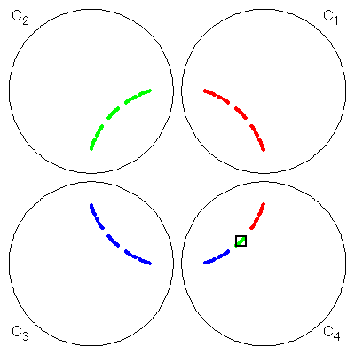
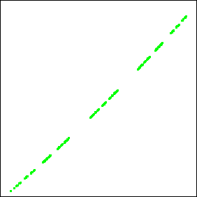
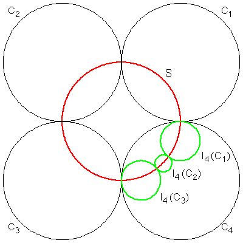
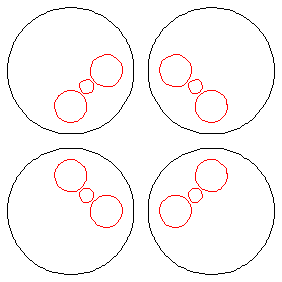
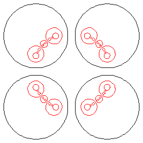

With four circles, so long as they do not touch one another the limit set is again a Cantor set, an extension of the situation for three circles.
The colors in C4 show the relations between the limit points in C1, C2, and C3, and those in C4.
|  |
Here we see a magnification of the boxed green points in C4, showing several more levels of the Cantor set structure.
|  |
If the inverting circles are tangent in pairs (in the symmetric fashion shown below), there is a circle orthogonal to all four inverting circles, and the limit set (in red) is this circle.
(In fact, the limit sets for these symmetrical arrangements of three and four disjoint circles are Cantor sets lying on this orthogonal circle.)
|  |
It is easy to see why the limit set is the whole orthogonal circle.
Thiink about how I4(C1), I4(C2), and I4(C3) contain the part of the limit set in C4.
The corresponding gap opened in the limit set, together with those resulting from the disjointness of the other inverting circles, cause the limit set to be a Cantor set.
Here are two generations of pictures, illustrating the formation of the Cantor set.
|  |
|  |
Return to Limit Sets and Inversion.